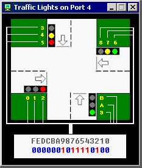
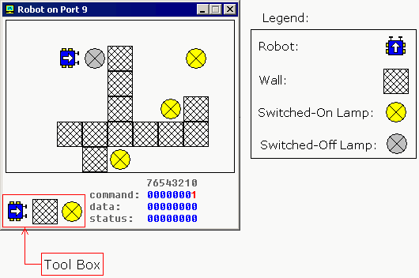

Emulator does not reproduce any original I/O ports of IBM PC, instead it has virtual devices that can be accessed by IN/OUT instructions.
Custom I/O Devices
"Emu8086" supports additional devices that can be created by 3rd party vendors. Device can be written in any language, such as: Visual Basic, VC++, Delphi. For more information and sample source code look inside DEVICES folder.
Reserved input / output addresses for custom devices are: from 00000Fh to 0FFFFh (15 to 65535). Port 100 corresponds to byte 100 in "EmuPort.io" file, port 101 to the byte 101, etc...
(we count from zero).
"EmuPort.io" file is located in Windows "Temp" directory (can be accessed by GetTempPath() function of the API).
I'll be glad to include devices made by you in the next release of "Emu8086". If you decide to share your device with other developers around the world - please send us the source code of the device!
Devices are available from "Virtual Devices" menu of the emulator.
- Traffic Lights - Port 4 (word)
The traffic lights are controlled by sending data to I/O Port 4.
There are 12 lamps: 4 green, 4 yellow, and 4 red.
You can set the state of each lamp by setting its bit:
1 - the lamp is turned on.
0 - the lamp is turned off.
Only 12 low bits of a word are used (0 to 11), last bits (12 to 15) are unused.
For example:
MOV AX, 0000001011110100b
OUT 4, AX

We use yellow hexadecimal digits in caption (to achieve compact view), here's a conversion:
Hex - Decimal A - 10 B - 11 C - 12 (unused) D - 13 (unused) E - 14 (unused) F - 15 (unused)
First operand for OUT instruction is a port number (4), second operand is a word (AX) that is written to the port. First operand must be an immediate byte value (0..255) or DX register. Second operand must be AX or AL only.
See also "traffic_lights.asm" in Samples.
If required you can read the data from port using IN instruction, for example:
IN AX, 4
First operand of IN instruction (AX) receives the value from port, second operand (4) is a port number. First operand must be AX or AL only. Second operand must be an immediate byte value (0..255) or DX register.
- Stepper Motor - Port 7 (byte)
The Stepper Motor is controlled by sending data to I/O Port 7.
Stepper Motor is electric motor that can be precisely controlled by signals from a computer.
The motor turns through a precise angle each time it receives a signal.
By varying the rate at which signal pulses are produced, the motor can be run at different speeds or turned through an exact angle and then stopped.
This is a basic 3-phase stepper motor, it has 3 magnets controlled by bits 0, 1 and 2. Other bits (3..7) are unused.
When magnet is working it becomes red. The arrow in the left upper corner shows the direction of the last motor move. Green line is here just to see that it is really rotating.

For example, the code below will do three clock-wise half-steps:
MOV AL, 001b ; initialize.
OUT 7, AL
MOV AL, 011b ; half step 1.
OUT 7, AL
MOV AL, 010b ; half step 2.
OUT 7, AL
MOV AL, 110b ; half step 3.
OUT 7, AL
If you ever played with magnets you will understand how it works. Try experimenting, or see "stepper_motor.asm" in Samples.
If required you can read the data from port using IN instruction, for example:
IN AL, 7
- Robot - Port 9 (3 bytes)

The Robot is controlled by sending data to I/O Port 9.
First byte (Port 9) is a Command Register. Set values to this port to make robot do something. Supported values:
Decimal Value Binary Value Action 0 00000000 Do nothing. 1 00000001 Move Forward. 2 00000010 Turn Left. 3 00000011 Turn Right. 4 00000100 Examine. Examines an object in front using sensor. When robot completes the task, result is set to Data Register and Bit #0 of Status Register is set to 1. 5 00000101 Switch On a Lamp. 6 00000110 Switch Off a Lamp.
Second byte (Port 10) is a Data Register. This register is set after robot completes the Examine command:
Decimal Value Binary Value Meaning 255 11111111 Wall 0 00000000 Nothing 7 00000111 Switched-On Lamp 8 00001000 Switched-Off Lamp
Third byte (Port 11) is a Status Register. Read values from this port to determine the state of the robot. Each bit has a specific property:
Bit Number Description Bit #0 zero when there is no new data in Data Register, one when there is new data in Data Register. Bit #1 zero when robot is ready for next command, one when robot is busy doing some task. Bit #2 zero when there is no error on last command execution, one when there is an error on command execution (when robot cannot complete the task: move, turn, examine, switch on/off lamp).
Example:
MOV AL, 1 ; move forward. OUT 9, AL ; MOV AL, 3 ; turn right. OUT 9, AL ; MOV AL, 1 ; move forward. OUT 9, AL ; MOV AL, 2 ; turn left. OUT 9, AL ; MOV AL, 1 ; move forward. OUT 9, AL ;
Keep in mind that robot is a mechanical creature and it takes some time for it to complete a task. You should always check bit#1 of Status Register before sending data to Port 9, otherwise the robot will reject your command and "BUSY!" will be shown. See "robot.asm" in Samples.
Creating Custom Robot World Map
You can create any map for the robot using the tool box.
If you choose robot and place it over existing robot it will turn 90 degrees counter-clock-wise. To manually move the robot just place it anywhere else on the map.
If you choose lamp and place it over switched-on lamp the lamp will become switched-off, if lamp is already switched-off it will be deleted.
Placing wall over existing wall will delete it.
Current version is limited to a single robot only. If you forget to place a robot on the map it will be placed in some random coordinates.
The map is automatically saved on exit.
Right-click the map to get a popup menu that allows toSwitch-Off/On all Lamps.